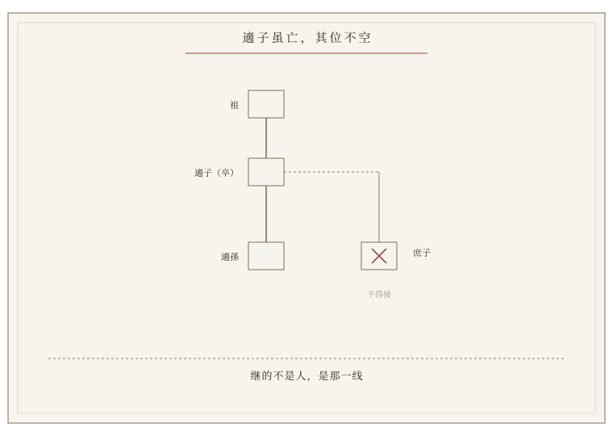

檀弓上 · 三·一 · 第 204 课
公仪仲子之丧，檀弓免焉。仲子舍其孙而立其子，檀弓讥之；子服伯子以文王、微子为「古之道」；子游以问孔子，孔子曰「否，立孙」。注「故为非礼，以非仲子也」「据周礼」。
说什么事：一位该立而未被立，一个不该免而偏要免。
落在哪一层：礼，兼及礼制与礼意。檀弓上开篇第一事。
为何编在此位：曲礼既毕，檀弓起篇即以一桩失礼之丧发端。全篇之骨在此：礼有常制，亦有权变，而权变不可冒充常制。
【经】公儀仲子之喪，檀弓免焉。仲子舍其孫而立其子。檀弓曰：「何居？我未之前聞也。」趨而就子服伯子於門右，曰：「仲子舍其孫而立其子，何也？」伯子曰：「仲子亦猶行古之道也。昔者文王舍伯邑考而立武王，微子舍其孫腯而立衍也。夫仲子亦猶行古之道也。」子游問諸孔子，孔子曰：「否。立孫。」
【注】故為非禮，以非仲子也。《禮》「朋友皆在他邦，乃袒免」。仲子舍其孫而立其子，此其所立非也。公儀蓋魯同姓，《周禮》適子死，立適孫為後。「何居」，居讀為姬姓之姬，齊魯之間語助也。前猶故也。趨而就子服伯子於門右，去賓位，就主人兄弟之賢者而問之。子服伯子，蓋仲孫蔑之玄孫子服景伯。伯子為親者隱耳，立子非也；文之立武王，權也；微子適子死，立其弟衍，殷禮也。孔子曰否，據周禮。
【疏】公仪仲子身今丧亡，檀弓与之为友，又非处他邦，为之著免，故为重服，讥其失礼。所以讥者，仲子適子既死，舍其適孙而立其庶子。檀弓居在宾位而言曰「何居」，言仲子舍適孙立庶子，是何道理乎？「我未之前闻」，前犹故也，言我未闻故昔有此事。既言之后，乃从宾位趋而就子服伯子于门右，问之曰「是何礼也」。伯子为仲子隐讳，乃言「仲子虽生周世，犹上行古之道也」；言「亦」者，馀人有行古之道，仲子亦如馀人。即引文王、微子之事为古之道。子游以此为疑，问诸孔子；孔子以仲子周人，当从周礼，不得立庶子，当立孙也。注「礼朋友至袒免」，知者，《丧服记》云「若他邦来，还家而无主，犹为之免」，郑注「归有主人乃已，明无主犹袒免也」；若朋友俱在家，则吊服加麻。注「去宾至大夫」，宾位之法随主人而变：小敛之前，主人未忍在主位，有事在西阶下，则宾亦入门西，吊于西阶下；小敛之后，尸出堂廉，主人位在阼阶下西面，宾吊者入门东。檀弓之来，当在小敛之前，初于西阶行讥，后乃趋乡门右问伯子焉。注「文王之立武王权也」：文王在殷之世，殷礼自得舍伯邑考而立武王；而言权者，殷礼若適子死得立弟，今伯邑考见在而立武王，故云权也。
免 音问。以布广一寸，从项中而前，交于额上，又却向后绕于髻。本为朋友在他邦无主者著之。
居 注「读为姬姓之姬，齐鲁之间语助也」。与「何」连读，即「何故」。
舍 弃而不立。
適孙 適子所生之孙。適子死，则立適孙为后。
腯 衍 微子之孙名腯，其弟名衍。
否 注「绝句」。断然之辞，不与伯子同。
公仪仲子死了，檀弓著免而吊。仲子舍其適孙而立庶子。檀弓说：「这是什么道理？我从前没听说过。」于是离了宾位，到门右就子服伯子问：「仲子舍適孙而立庶子，是何礼？」伯子说：「仲子也是行古之道罢。从前文王舍伯邑考而立武王，微子舍其孙腯而立其弟衍。」子游以此问孔子，孔子说：「不对。当立孙。」
一事而两失：仲子舍適孙而立庶子，是失制；檀弓不在他邦而著免，是失仪。然而檀弓之失仪，正是为了讥人之失制——郑注一句「故为非礼，以非仲子也」，把这一层手段说破。伯子答以文王、微子，是「为亲者隐」；孔子一问即断「立孙」，是「据周礼」。同一件事，门内之言与天下之论，判然两途。
第一层 以失礼讥失礼 檀弓之免，本非其分（朋友皆在他邦乃袒免，此在国而免）。他偏著之，好让满堂宾众看见：有人竟为此事著重服。手段不正经，所讥之事却正经。礼有时候需要一个人先站出来失一点分寸，才能把更大的失分寸照出来。
第二层 隐与直 郑注「伯子为亲者隐耳，立子非也」。伯子不是不知，是不忍直说；他把「立庶」说成「行古之道」，替亲人留一层面子。孔子则「据周礼」一句断之。二者并非矛盾：门内之讳与天下之公，各守其位。檀弓上开篇即把这层分寸摆出来。
第三层 古之道不可泛引 文王立武王，郑云「权也」——伯邑考尚在，而立弟，是殷世之权；微子立衍，郑云「殷礼也」——適子死而立弟，是殷家之制。两事都不是周礼之常。引古以文过，最易成理，也最易成误。故孔子只答一个「否」。
第四层 立孙之制 《周礼》「適子死，立適孙为后」。此制之义在「继统不继人」：所继者是那一线，不是那一个人。故適子虽亡，其位不空，必待其孙。
与今日何干 凡遇继承、接位、传业之事，最常听见的一句话就是「古已有之」。此节提醒：先问那件事是常制，还是权变。权变可以援，不能为准。
| 左 | 右 |
|---|---|
| 檀弓免 | 朋友在他邦乃袒免，此在国而免，故为非礼 |
| 免之用意 | 以非礼非仲子 |
| 仲子舍適孙立庶子 | 其所立非也 |
| 伯子言古之道 | 为亲者隐耳 |
| 文王立武王 | 权也 |
| 微子立衍 | 殷礼也 |
| 孔子曰否 | 据周礼，当立孙 |
画一座丧家的门外，门右一侧。前景一人面朝门内、背对观者，头上横缠一道窄布带（布带自项后绕至额上，可见绕髻之迹），衣为素色深衣，双手在身前相叠——示「著免而吊」。稍后偏右立另一位年长者，侧身相对，一手微抬作解释之状。门槛内侧可见一道横置的门板与半开的门扇，门内深处只留一片虚淡的暗影，不画棺、不画人。地面素净，无供器。不写文字。赭色只用在著免那人额上布带的一小段。
